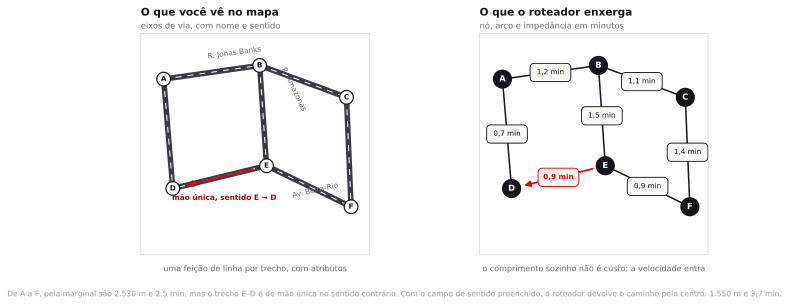
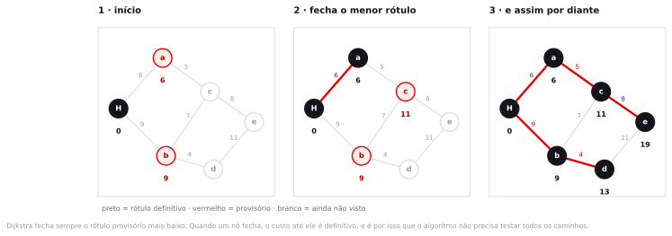
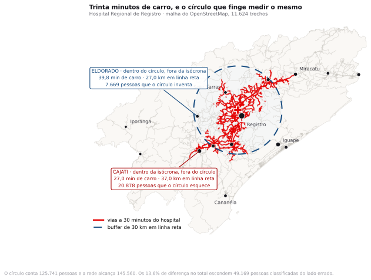
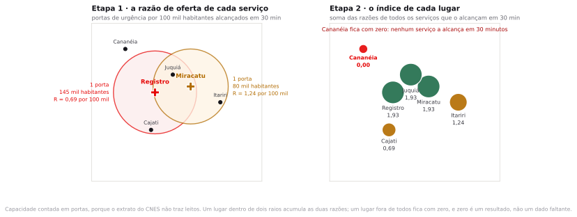
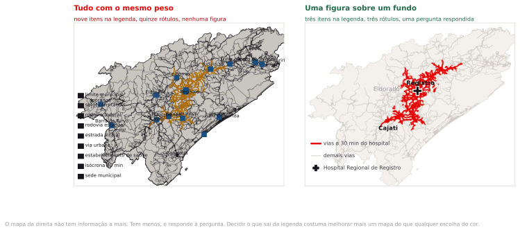

Este tema não foi trabalhado em sala. A página reúne só a parte teórica, como material de apoio para os grupos cujo projeto final envolva redes viárias, tempo de deslocamento ou acesso a equipamentos. O roteiro no QGIS, o exercício e o pacote de dados foram retirados.
Redes, acessibilidade e comunicação cartográfica
Até agora o espaço foi contínuo. Você media distância entre dois pontos e a resposta era a reta que os liga, porque nada impedia a passagem. Uma ambulância não anda em linha reta, e modelar essa restrição é o assunto da primeira metade desta aula.
Para medir movimento é preciso trocar o espaço contínuo por um grafo: um conjunto de nós ligados por arcos, onde só é possível ir de um nó a outro percorrendo arcos existentes. O cruzamento vira nó, o trecho de rua vira arco, e o comprimento do trecho, dividido pela velocidade permitida, vira o custo de atravessá-lo.
Impedância
Impedância é o custo de percorrer um arco. Pode ser comprimento em metros, tempo em segundos, consumo de combustível, pedágio, esforço de subida ou uma combinação ponderada. A escolha da impedância é a decisão analítica central do problema, e ela não vem do dado: vem da pergunta. Trocar distância por tempo muda a rota, muda a área de serviço e muda a conclusão política.

Um grafo em que os arcos têm direção é dirigido. Isso importa mais do que parece: em uma malha urbana com muitas vias de mão única, ignorar o sentido produz rotas fisicamente impossíveis e subestima sistematicamente o tempo de viagem. No QGIS o sentido entra por um campo da tabela, que no OpenStreetMap se chama oneway. Se você deixar esse campo em branco na janela do algoritmo, o programa assume mão dupla em tudo, sem avisar. Na malha desta aula, 1.964 dos 11.624 trechos são de mão única.
Uma rede que parece contínua na tela pode estar quebrada no grafo. Dois trechos que se cruzam sem compartilhar um vértice são, para o roteador, dois arcos que não se tocam, e o resultado é uma rota absurda ou um "não há caminho". Antes de qualquer análise de rede, verifique a topologia. Ponte e viaduto são o caso legítimo em que dois trechos se cruzam e não se conectam, e é por isso que a validação não pode ser automática.
Caminho mínimo e o algoritmo de Dijkstra
Achar o caminho de menor custo entre dois nós parece exigir testar todas as combinações, e em uma rede com dezenas de milhares de arcos isso seria inviável. Em 1956, Edsger Dijkstra resolveu o problema em vinte minutos, sem papel, esperando um café em Amsterdã.
A ideia é simples de descrever. Cada nó carrega um rótulo com o menor custo conhecido até ele, inicialmente infinito, exceto a origem, que vale zero. A cada passo, o algoritmo fecha o nó com o menor rótulo provisório, declara aquele custo definitivo e atualiza os vizinhos. Repete até fechar o destino.

O resultado do algoritmo não é uma rota, é uma árvore: o caminho mínimo da origem para todos os nós alcançáveis, de uma vez só. Essa é a razão pela qual calcular uma isócrona custa quase o mesmo que calcular uma única rota, e é o que torna a análise de acessibilidade viável em escala municipal.
Matriz origem-destino, área de serviço, isócrona
Três construções derivam do caminho mínimo, e vale saber qual pedir.
| Construção | O que é | Para que serve |
|---|---|---|
| Matriz origem-destino | Uma tabela com o custo de cada origem até cada destino | Alocar demanda a equipamentos, dimensionar frota, escolher entre unidades concorrentes |
| Área de serviço | O conjunto de arcos alcançáveis a partir de um ponto dentro de um orçamento de custo | Delimitar a área de influência real de uma unidade |
| Isócrona | A área de serviço quando a impedância é tempo, desenhada como polígono | Comunicar cobertura: "quinze minutos daqui" é uma frase que qualquer pessoa entende |
Essa última frase merece atenção. O algoritmo devolve os trechos de via alcançados. Para dizer "quantas pessoas moram dentro", é preciso virar polígono, e há três caminhos usuais: envoltória convexa, que sempre exagera; envoltória côncava, que depende de um parâmetro arbitrário; e corredor, que é um buffer em torno das vias alcançadas. No exemplo do Vale do Ribeira, o corredor considerado é o de 1.500 metros, porque ali a ocupação segue a estrada. Em uma cidade densa a escolha seria outra, e o número mudaria.
O preço da linha reta
No tema 5 você desenhou um buffer de 600 metros em torno das estações de metrô e usou aquele círculo para decidir onde caberia habitação social. O círculo estava errado, e agora dá para dizer o tamanho do erro.
A razão entre a distância pela rede e a distância em linha reta chama-se índice de desvio. Em malha urbana ortogonal ele fica em torno de 1,2 a 1,3. Em terreno acidentado, com rio, serra ou ferrovia no meio, passa de 2. E como área cresce com o quadrado da distância, um índice de 1,3 significa que a área efetivamente alcançável a pé em 600 metros de calçada fica em torno de 60% da área do círculo, porque 1 dividido por 1,3 ao quadrado dá 0,59. Quatro décimos do que o mapa do tema 5 pintou como servido não estavam a 600 metros de caminhada.

Se o total pela rede e o total pelo círculo diferem 13,6%, por que não usar o círculo, que é mais barato de calcular?
Porque a decisão não é sobre o total. Uma secretaria não trata "145 mil pessoas"; ela decide onde abrir uma unidade, e para isso precisa saber quais pessoas. O círculo erra o endereço de 49.169 delas, um terço da população que a rede alcança, e é sobre endereços, não sobre totais, que se escolhe onde abrir a unidade. A diferença no total é pequena porque os dois erros se compensam em parte; em outra geografia eles se somam, e aí o total também fica errado.
O conceito de acessibilidade
Estar a trinta minutos de um hospital não significa ser atendido em trinta minutos. Se as mesmas cem mil pessoas estão a trinta minutos do mesmo hospital de quarenta leitos, a distância é a mesma e o acesso é péssimo. Acessibilidade é uma relação entre oferta e demanda mediada pelo custo de deslocamento, e medi-la exige olhar os dois lados.
O método mais usado para isso é o de dois estágios de área de captação flutuante, proposto por Luo e Wang em 2003, e conhecido pela sigla em inglês 2SFCA. Ele tem duas etapas e nenhuma matemática difícil.

No primeiro estágio, para cada serviço, delimita-se a área de captação e calcula-se a razão entre a capacidade e a população contida nela. O Hospital Regional de Registro alcança 145.560 pessoas em trinta minutos; o pronto-socorro de Miracatu alcança 80.489. Contando cada unidade como uma porta, a razão de Registro é 0,69 porta por 100 mil habitantes e a de Miracatu, 1,24. A unidade que atende menos gente tem a melhor razão, e esse é o ponto do método.
No segundo estágio, para cada lugar de residência, delimita-se a área de captação e somam-se as razões de todos os serviços que caem dentro dela. Os 55.136 habitantes alcançados pelas duas unidades ficam com 1,93, e estão em Registro, Juquiá e Miracatu. Quem só é alcançado por Registro fica com 0,69. Cananéia, que não é alcançada por nenhuma das duas em trinta minutos, fica com zero.
O 2SFCA pede capacidade: leitos, médicos por turno, consultas ofertadas por mês. O extrato do CNES usado no exemplo não tem nenhum desses campos, e contar cada estabelecimento como uma unidade trata o Hospital Regional de Registro e um pronto atendimento municipal como equivalentes, o que eles não são. A contagem de leitos existe na base do CNES, em outro arquivo da mesma competência, e é ela que deveria entrar aqui. Faça a conta com o que existe, e escreva na legenda que a capacidade foi contada em portas.
Dois bairros estão exatamente a vinte minutos de um hospital. Um deles tem índice de acessibilidade três vezes maior que o outro. Como?
Porque a competição pela mesma vaga é diferente. Se o segundo bairro divide aquele hospital com uma população três vezes maior, a razão oferta por habitante cai na mesma proporção. É o que separa Registro de Miracatu no exemplo acima: mesma contagem de unidades, populações alcançadas quase o dobro uma da outra. É por isso que mapa de distância a equipamento e mapa de acesso a equipamento não são a mesma peça, e por isso que "todo mundo tem hospital a menos de trinta minutos" é uma frase que não afirma nada sobre atendimento.
Por que isso importa de forma diferente no seu curso
| Curso | A mesma isócrona, outra pergunta |
|---|---|
| Engenharia | Tempo de ciclo, dimensionamento de frota e localização de centro de distribuição. A impedância é custo operacional por quilômetro rodado, e a rede define o raio econômico da operação. |
| Administração | Área de influência de loja, canibalização entre unidades da mesma rede e escolha de ponto. Uma isócrona de 15 minutos de carro é o padrão de mercado para varejo alimentar. |
| Economia | Acesso a mercado e custo de transporte como determinante de preço regional. A mesma matriz origem-destino alimenta modelo gravitacional de fluxo comercial e migratório. |
| Direito e políticas públicas | Direito à saúde traduzido em minutos. A Rede de Atenção às Urgências trabalha com tempo-resposta, e um mapa de tempo até a porta 24 horas é peça de ação civil pública e de plano regional de saúde. |
O mapa como argumento visual
Os últimos quinze minutos de teoria do semestre tratam da peça que sai da análise, porque ela é a única parte que a maioria das pessoas vai ver.
Quem recebe o seu mapa tem, na prática, uns dez segundos de atenção e poder de decisão: olha, forma uma impressão e passa para o próximo item da pauta, sem ler a legenda inteira nem procurar o norte. O trabalho é fazer com que a impressão formada nesses dez segundos seja a conclusão da sua análise, e não outra coisa.
Hierarquia visual e relação figura-fundo
Hierarquia visual é a ordem em que os elementos são percebidos, e ela é construída por contraste: de cor, de peso, de saturação, de tamanho. Relação figura-fundo é o efeito de um elemento se destacar como objeto sobre um contexto que recua. Um mapa sem relação figura-fundo dá o mesmo peso a tudo, e o leitor não descobre qual é o assunto.

O passo que mais melhora um mapa é decidir o que sai da legenda. Toda camada que você carregou tem um dono emocional, que é você, e tirar uma parece perda de trabalho. Mas cada item de legenda cobra atenção de quem olha, e a atenção é o recurso escasso da peça. A pergunta a fazer item por item é direta: se eu apagar isto, alguma conclusão muda? Se não muda, sai.
O seu mapa de isócronas tem nove itens na legenda. Quantos deveriam ficar?
Provavelmente três. A camada que responde à pergunta, a camada que dá referência geográfica mínima para o leitor se localizar, e a camada dos pontos de interesse. Limite municipal, malha viária completa, setor censitário e classificação de rodovia por tipo são contexto, e contexto se comunica por peso visual, em cinza claro, sem entrar na legenda. Nem tudo que aparece no mapa precisa ser nomeado.
Há, por outro lado, um conjunto de elementos que não é negociável. Uma peça cartográfica defensável carrega seis coisas, e a falta de qualquer uma delas é motivo legítimo para o outro lado descartar o documento.
| Elemento | Por que ele é obrigatório |
|---|---|
| Escala | Sem ela o leitor não sabe se a mancha vermelha tem dois quarteirões ou dois municípios. Prefira barra gráfica: ela continua correta depois que alguém redimensiona a imagem no slide. |
| Orientação | Uma seta discreta. Só é dispensável quando o norte está para cima e a área é reconhecível, o que é menos frequente do que se imagina. |
| Fonte dos dados | Nome da base, órgão e ano de referência. É o que permite ao leitor refazer, e é o primeiro item que um assistente técnico da parte contrária procura. |
| Sistema de coordenadas | O código EPSG. Depois do tema 2 você sabe que uma medida de área sem CRS declarado não é auditável. |
| Autoria | Quem produziu e para quem. Mapa anônimo não tem responsável a quem pedir esclarecimento, e uma decisão pública não pode se apoiar em documento pelo qual ninguém responde. |
| Data de produção | Distinta do ano do dado. Um mapa de 2026 feito com dado de 2010 é honesto se disser as duas datas, e enganoso se disser só uma. |
Reprodutibilidade
O critério final de qualidade de uma análise é outra pessoa conseguir refazê-la: sem isso, o número depende da palavra de quem o produziu, e não há como auditá-lo. O teste é concreto: um colega, com os arquivos de origem e o seu registro de procedimento, chega ao mesmo número sem falar com você?
No QGIS isso significa três hábitos. Salvar o projeto com caminhos relativos, para que a pasta inteira possa ser copiada. Registrar a sequência de algoritmos com seus parâmetros, e o jeito mais direto é montar um modelo no Graphical Modeler, que é ao mesmo tempo a ferramenta e a documentação. E versionar os dados de entrada, guardando a data do download e a versão da base, porque o OpenStreetMap de hoje não é o de mês que vem.
Baixar a malha viária pelo plugin QuickOSM é rápido e funciona bem, e é o que você faria em um projeto real. Mas a consulta de hoje devolve um resultado diferente da consulta de amanhã, porque o OpenStreetMap é editado continuamente. Se o seu relatório cita um número de rede, o download precisa ser guardado como arquivo, com data, e distribuído junto com o relatório. É por isso que uma análise que precisa ser refeita depois parte de um arquivo fixo e datado: para que os números sejam reproduzíveis daqui a dois anos.